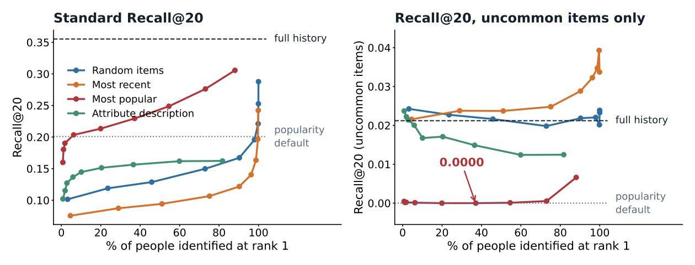
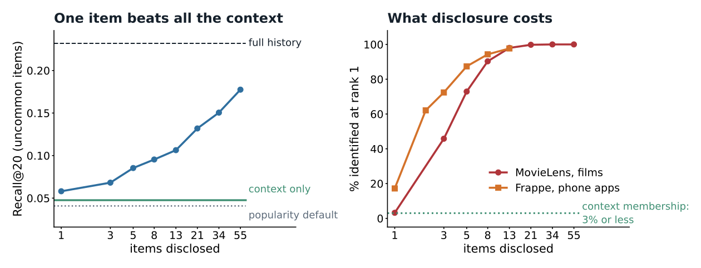
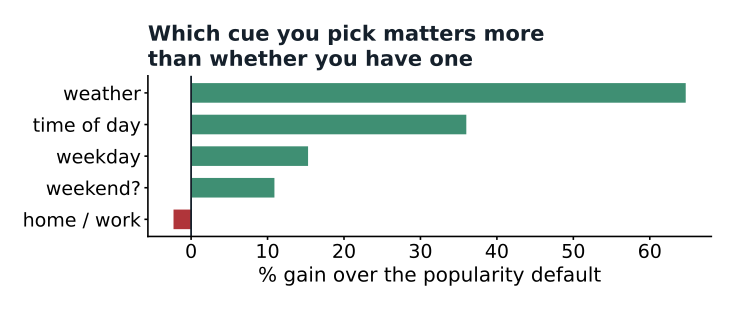

Measuring the point where more context stops helping
The data-minimisation strategy that scores best on the standard metric retrieves zero uncommon items. It wins by abandoning the person.
Personalised systems accumulate data, most of it observed rather than volunteered. GDPR Article 5(1)(c) requires that it be limited to what is necessary. How little is that?
Biega et al. (SIGIR 2020) formalised this as performance-based data minimisation, compared seven ways of choosing what to keep, and found the accuracy cost modest but unevenly spread across people.
Quality and re-identification measured together rather than separately, on two datasets, with a popularity control that the earlier framing had no reason to run.

MovieLens 1M, 1,012 people, 3 seeds. Left: keeping a person's most popular items dominates every alternative at every profile size, and identifies far fewer people. Right: the same predictions scored only on items below the 80th popularity percentile. Most-popular retrieves 0.0000 at 8 and at 13 items disclosed.
Uncommon items found by the best-scoring strategy. Told only about someone's popular items, the model returns something close to a bestseller list. Scored against targets that are themselves mostly popular, that looks like success.
Rank correlation between the standard metric and the uncommon-item metric across 45 strategy and size combinations (p = 0.058, short of significance). The direct comparison carries the claim: 0.0000 against 0.0221 at 13 items.
Of people identified at rank 1 from 8 disclosed films, matched against all 1,012 profiles, without timestamps. On Frappe, 2 phone apps identify 62.1%. Informative and identifying are the same property.

Every condition restricted the same way, so each gets twenty slots for uncommon items. A single disclosed item (0.0581) beats group context (0.0476), which in turn beats the popularity default (0.0408). An earlier version of this analysis compared restricted context against unrestricted disclosure and reached the opposite conclusion; the second dataset caught it.

Frappe, 957 users, 4,082 apps; cohort 87 users and 235 user-context cells. Home or work is 79% unknown in the data, and gives nothing.